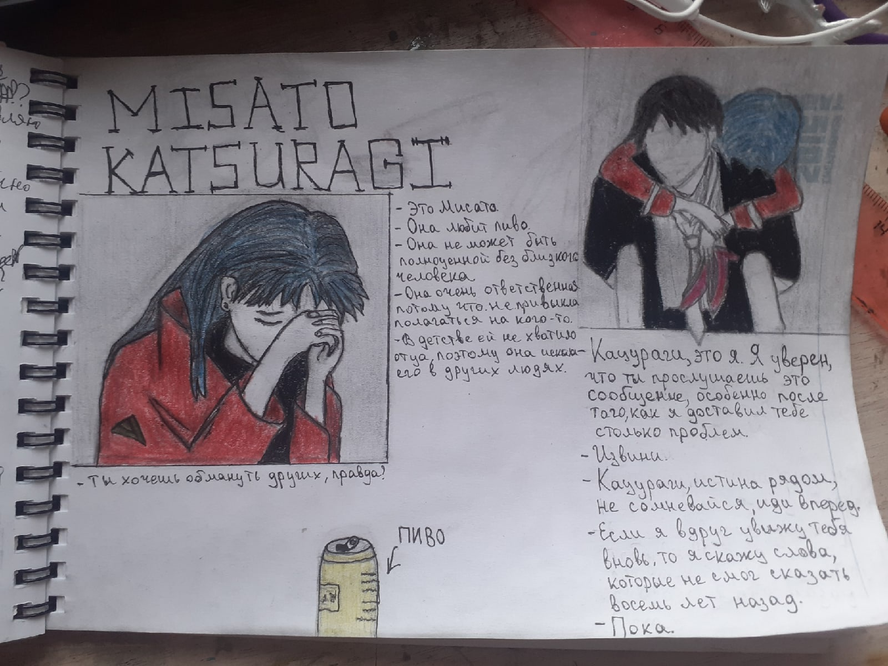
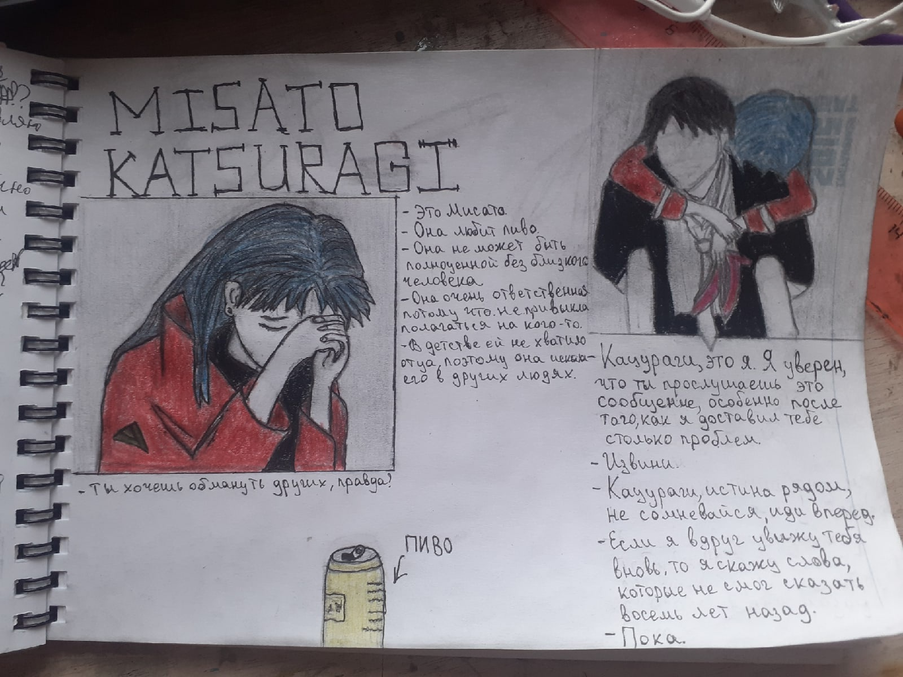

29.07.2022
Первая запись
Сегодня я проснулся в 9 часов утра при помощи будильника, потому что захотел восстановить режим сна. В последнее время мне не страшно идти в будущий колледж, потому что я понял что мне нравится учится. С утра я бил хлопушкой множество мух в доме, перешлёпал их около 30 штук. Не понятно откуда они появляются, но они раздражают. Еще недавно я перестал общаться с подругой Лизой, по ее инициативе. Не знаю почему она так захотела, но сначала я винил себя в том что со мной что-то не так, но она развеяла мои сомнения. Надеюсь мы еще пообщаемся с ней когда-нибудь. На днях я посмотрел аниме "Евангелион", вспомнив о рисунке моей подруги.

Это аниме оказало на меня большое впечатление, да и сюжетные повороты там неплохие. Практически каждый из персонажей имеет детские травмы, видимо это частый случай в Японии. Жители России далеко от этого не ушли. Мне кажется, именно по этой причине аниме и популярно в нашей стране. Во многих мультфильмах аниме главные герои - это люди с какими-то то ментальными проблемами. Это, вполне возможно и привлекает общество к фанатизму от японских мультипликаций. Ведь легко ассоциировать себя с замкнутым в себе, героем аниме. Еще я недавно пересмотрел Тетрадь Смерти, но правда это уже не так интересно как в первый раз, но все же. Было интересно освежить свои былые воспоминания о событиях этого аниме-сериала. Но концовку с подменами тетрадей я так и не понял...
Скоро приедет отец, я жду его. Надеюсь что мы сделаем с ним что-нибудь полезное, да и я за помощь должен получить деньги на одежду. Главное чтобы та одежда которую я хочу заказать из интернета пришла и была бы хорошего качества.
В последнее время мне очень скучно, я не знаю чем себя занять. Именно поэтому я и проявил желание сделать сайт-дневник. В голове я думаю, что такой большой отдых мне не нужен, и я больше готов работать, потому что не знаю как развлекать себя на отдыхе. Ну действительно, как ты можешь себя развлечь дома. Это трудный вопрос лично для меня. Надеюсь что учёба в колледже не превратится в рутину, и это будет интереснее чем в этой деревенской школе. Посмотрим что будет...
Хочется куда-то вырваться, не сидеть дома, приходить в него только для того чтобы поспать...😞 Еще я бы хотел чтобы моя сестра чаще к нам приезжала и наконец-то таки помирилась с нашей мамой. Они обе хороши, от этого только мне и им хуже.
Окей, закончу на такой грустной ноте, но а что поделать. Не знаю когда еще что-нибудь чиркану, но такое время будет, я обещаю

Это аниме оказало на меня большое впечатление, да и сюжетные повороты там неплохие. Практически каждый из персонажей имеет детские травмы, видимо это частый случай в Японии. Жители России далеко от этого не ушли. Мне кажется, именно по этой причине аниме и популярно в нашей стране. Во многих мультфильмах аниме главные герои - это люди с какими-то то ментальными проблемами. Это, вполне возможно и привлекает общество к фанатизму от японских мультипликаций. Ведь легко ассоциировать себя с замкнутым в себе, героем аниме. Еще я недавно пересмотрел Тетрадь Смерти, но правда это уже не так интересно как в первый раз, но все же. Было интересно освежить свои былые воспоминания о событиях этого аниме-сериала. Но концовку с подменами тетрадей я так и не понял...
Скоро приедет отец, я жду его. Надеюсь что мы сделаем с ним что-нибудь полезное, да и я за помощь должен получить деньги на одежду. Главное чтобы та одежда которую я хочу заказать из интернета пришла и была бы хорошего качества.
В последнее время мне очень скучно, я не знаю чем себя занять. Именно поэтому я и проявил желание сделать сайт-дневник. В голове я думаю, что такой большой отдых мне не нужен, и я больше готов работать, потому что не знаю как развлекать себя на отдыхе. Ну действительно, как ты можешь себя развлечь дома. Это трудный вопрос лично для меня. Надеюсь что учёба в колледже не превратится в рутину, и это будет интереснее чем в этой деревенской школе. Посмотрим что будет...
Хочется куда-то вырваться, не сидеть дома, приходить в него только для того чтобы поспать...😞 Еще я бы хотел чтобы моя сестра чаще к нам приезжала и наконец-то таки помирилась с нашей мамой. Они обе хороши, от этого только мне и им хуже.
Окей, закончу на такой грустной ноте, но а что поделать. Не знаю когда еще что-нибудь чиркану, но такое время будет, я обещаю